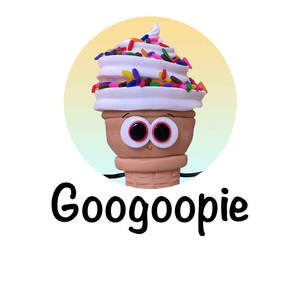

Trade Mark Journal No.2025/043 24 October 2025
UK00004275819 10 October 2025 (9,16,28)

The mark consists of the wording "GOOGOOPIE", with a cartoon ice-cream character with large eyes, above the wording. The cartoon character has the appearance of a childlike ice-cream soft serve with rainbow coloured sprinkles on top.
- Class 9
- Games software for use with video game consoles; Computer games; Games software; Computer programs for playing games; Video games cartridges; Computer programmes for playing games; Games cartridges for use with electronic games apparatus; Video games software; Downloadable computer games; Computer games programs; Interactive multimedia software for playing games; Software programs for video games; Computer game software for use with on-line interactive games; Downloadable interactive entertainment software for playing video games; Computer hardware for games and gaming; Computer games of chance; Video game programs; Programs for arcade video game machines; Downloadable interactive entertainment software for playing computer games; Games software for use with computers; Educational software featuring instructions for playing games; Digital book readers; Audio books; Downloadable series of children’s books; Talking books; Printed cards [magnetic]; Musical video recordings; Music recordings; Downloadable video recordings featuring music; Musical recordings; Downloadable music sound recordings; Prerecorded music videos; Pre-recorded video tapes featuring music; Prerecorded video tapes featuring music; Downloadable musical sound recordings; Tape recordings of music; Musical sound recordings; Series of musical sound recordings; Music headphones; Music tapes; Recorded film; Prerecorded audio tapes featuring music; Music software; Musical recordings in the form of discs; Video tapes with recorded animated cartoons; Downloadable video recordings; Instruments for recording sound; Prerecorded compact discs featuring music.
- Class 16
- Books in the fields of games and gaming; Book covers; Book binders; Book bindings; Book jackets; Book marks; Book wrappings; Story books; Book markers; Non-fiction books; Series of non-fiction books; Books; Copy books; Comic books; Book binding material; Writing books; Guide books; Song books; Sketch books; Series of fiction books; Picture books; Manga comic books; Fiction books; Poster books; Covers for books; Reference books; Printed books; Coloring books; Note books; Writing or drawing books; Flip books; Information books; Birthday books; School writing books; Colouring books; Painting books; Sticker books; Drawing books; Fantasy books; Pop-up books; Scrap books; Composition books; Printed music books; Series of computer game hint books; Music note books; Baby books; Baby books [storybooks]; Print letters; Print characters; Prints; Printed publications; Publications (Printed -); Graphic prints; Printed paper labels; Canvas prints; Printed stationery; Printed paper invitations; Printed flyers; Offset printing paper for pamphlets; Printed brochures; Cartoon prints; Printed booklets; Photographic prints; Color prints; Graphic art prints; Stickers; Bumper stickers; Car stickers; Adhesive stickers; Stickers [stationery]; Sticker activity books; Albums for stickers; Decals; Adhesive lettering; Adhesive printed labels; Wall decals; Lettering stencils; Printed luggage labels; Stamp pads; Books for children; Painting sets for children; Coloring books for adults; Modeling clay for children; Stationery; Cardboard containers; Containers of cardboard for packaging; Packing cardboard containers; Paper containers; Colour pencils; Colour pens; Colour charts; Colour sample cards; Color pencils; Artists' water colour saucers; Water colours [finished painting]; Colouring pictures; Coloured chalk; Coloured pencils; Printed material in the nature of color samples; Colouring pencils; Pencils for colouring; Chalks for colouring; Colouring crayons; Coloured pens; Colouring pens; Cards; Greeting cards; Gift cards; Picture cards; Invitation cards; File cards; Birthday cards; Note cards; Printed cards; Blank cards; Name cards; Christmas cards; Table mats of card; Flash cards; Post cards; Dinner mats of card; Anniversary cards; Packaging boxes of card; Advertisement boards of card; Scoring cards; Greetings cards; Holiday cards; Sheet music; Albums; Music books; Music scores; Printed music.
- Class 28
- Toys; Toys, games, and playthings; Ride-on toys; Cuddly toys; Puzzles [toys]; Toys for sandpits; Stuffed toys; Plush toys; Inflatable toys; Toys for babies; Noisemakers [toys]; Wind-up toys; Fidget toys; Radio-controlled toys; Plastic toys; Scooters [toys]; Crib toys; Mobiles [toys]; Windup toys; Wooden toys; Model cars [toys or playthings]; Toy dolls; Educational toys; Outdoor toys; Bendable toys; Toy playsets; Models being toys; Bath toys; Sandbox toys; Bathtub toys; Action figures [toys or playthings]; Electronic toys; Whistles [toys]; Sand toys; Soft toys; Controllers for toys; Miniature car models [toys or playthings]; Bouncing toys; Drones [toys]; Cloth toys; Musical toys; Toy figurines; Toy furniture; Mechanical toys; Play mats for use with toy vehicles [playthings]; Wheeled toys; Developmental toys; Fluffy toys; Plastic toys for use in the bath; Stuffed animals [toys]; Inflatable bath toys; Rocking toys; Stacking toys; Fabric toys; Plastic models being toys; Water toys; Modular toys; Model toys; Drawing toys; Toy prams; Action toys; Stuffed and plush toys; Stuffed plush toys; Plush stuffed toys; Battery-operated action toys; Sketching toys; Children's toys; Squeezable squeaking toys; Smart toys; Toy bicycles; Whistling toys; Plastic character toys; Toy tableware; Construction toys; Push toys; Toy wheelbarrows; Squeeze toys; Talking toys; Toy bakeware and toy cookware; Bendy balls being toys; Toy xylophones; Toy mobiles; Pull toys; Stuffed bean-filled toys; Toy animals; Clothing for toy figures; Toy cars; Toy strollers; Water-squirting toys; Toys for pet animals; Assembly toys; Toy balloons; Toy scooters; Intelligent toys; Toy hats; Music box toys; Smart plush toys; Toy robots; Toy tools; Toys in the form of puzzles; Xylophones being musical toys; Toy glockenspiels; Soft sculpture toys; Inflatable pool toys; Costumes being childrens playthings; Toy balls; Toy vehicles; Puzzle mats [toys]; Toy airplanes; Playthings; Games; Games consoles; Arcade games; Cards [games]; Miniatures for use in games; Dice games; Joysticks for video games; Parlor games; Boards games; Board games; Hand-held consoles for playing video games; Game consoles; Quiz games; Party games; Memory games; Musical games; Game boards for trading card games; Electronic games; Building games; Video game consoles; Role playing games; Role play games; Trading cards for games; Controllers for computer games; Handheld computer games; Game cards; Clothing for dolls; Doll clothing; Playhouses for children; Tricycles for children for use as playthings; Playground apparatus for children; Play structures for children; Electronic games for the teaching of children; Electronic educational game machines for children; Climbing slides being play apparatus for children; Costume masks; Masquerade masks; Halloween masks; Face masks being playthings; Masks (Theatrical -); Masks (Toy -); Toy masks; Toy and novelty face masks; Masks [playthings]; Trading cards [card game]; Card games; Playing cards and card games; Playing card cases; Trading card games; Playing cards; Cards (Playing -); Clothes for European dolls; Dolls' clothes.
Alok Haldar